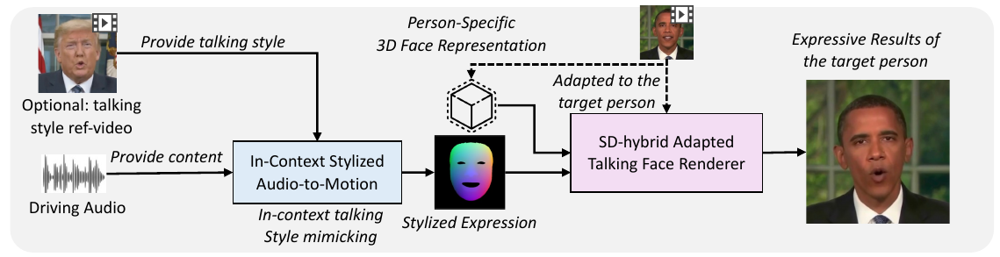

• Please focus on the lip motion, the talking face avatars are driving by the audio track in the video.
Talking face generation (TFG) aims to animate a target identity's face to create realistic talking videos. Personalized TFG is a variant which emphasizes the perceptual identity similarity between the synthesized result to the real person (both from the perspective of static appearance and dynamic talking style). While previous works typically solve this problem by learning an individual neural radiance field (NeRF) for each identity to implicitly store the identity's static and dynamic information, we find it inefficient and non-generalized due to the per-identity-per-training framework and the limited training data. To this end, we propose MimicTalk, the first attempt that exploit the rich knowledge from a NeRF-based person-agnostic genric model for improving the effieicency and robustness of personalized TFG. To be specific, (1) we first come up with a person-agnostic 3D TFG model as the base model, and propose to adapt it into a specific identity; (2) we propose a static-dynamic hybrid adaptation pipeline to help the model to learn the personalized static appearance and facial dynamic; (3) we propose an in-context stylized audio-to-motion (ICS-A2M) model that enables generating co-speech facial motion while mimicking the talking style of the target person. The adaptation process to an unseen identity can be converged in only few minutes. Experiments show that our MimicTalk surpasses previous baselines in terms of video quality, efficiency, and expresiveness.
The overall inference process of MimicTalk is demonstrated as follows:
